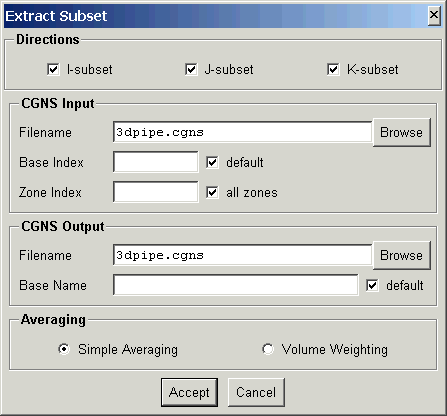
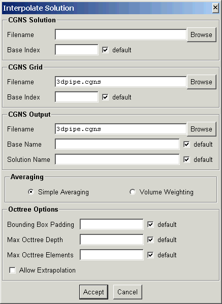

This document describes routines to extract a subset from a CGNS data file and interpolate a solution from one CGNS file to another.
| Extract Subset | extract_subset | Extract subset from structured CGNS file. |
| Interpolation | interpolate_cgns | Interpolate solution from one CGNS file to another |
Extracts a subset of the grid from a structured CGNS file.
The program is executed from the command line as:
extract_subset options CGNSfile newCGNSfile
The input CGNS file, CGNSfile is required. If the output CGNS file, newCGNSfile, is specified the modified CGNS data file will be written to it, otherwise CGNSfile will be modified. The command line options are:
| option | description |
| -w | use volume weighted averaging (default is simple averaging) |
| -b base | use CGNS base index base. (default 1) |
| -z zone | read zone number zone (default all zones) |
| -B name | write subset to base name (default is same as read) |
| -i | subset in i-direction |
| -j | subset in j-direction |
| -k | subset in k-direction |
| -a | subset in i,j and k-directions (default) |
The following panel is created when launched from the ADFviewer GUI:

This allows interactive selection of the input and output files and options. The Accept button will then construct the command line and run extract_subset. If the extraction is successful, ADFviewer will read and display the CGNS file.
Reads a solution from one CGNS file and interpolates the solution onto the grid from another CGNS file.
The program is executed from the command line as:
interpolate_cgns options CGNSsol CGNSgrid newCGNSfile
The solution CGNS file, CGNSsol, and the grid CGNS file, CGNSgrid, are required. If the output CGNS file, newCGNSfile, is specified the modified CGNS data file will be written to it, otherwise CGNSgrid will be modified. The command line options are:
| option | description |
| -c base | use CGNS base index base for the solution file. (default 1) |
| -b base | use CGNS base index base for the grid file. (default 1) |
| -B name | write results to base name (default is same as read) |
| -S name | write to solution name (default is same as read) |
| -w | use volume weighted averaging (default is simple averaging) |
| -a | allow element extrapolation |
| -d depth | set max depth for octtree to depth (default 16) |
| -e nelem | set max elements in an octtree branch to nelem (default 256) |
| -p pad | set the bounding box padding fraction to pad (default 0.01) |
| -i iter | set the max number of Newton interations to iter (default 20) |
| -t tol | set the parametric u, v, w tolerance to tol (default 0.00001) |
The following panel is created when launched from the ADFviewer GUI:

This allows interactive selection of the input and output files and options. The Accept button will then construct the command line and run interpolate_cgns. If the interpolation is successful, ADFviewer will read and display the CGNS file.